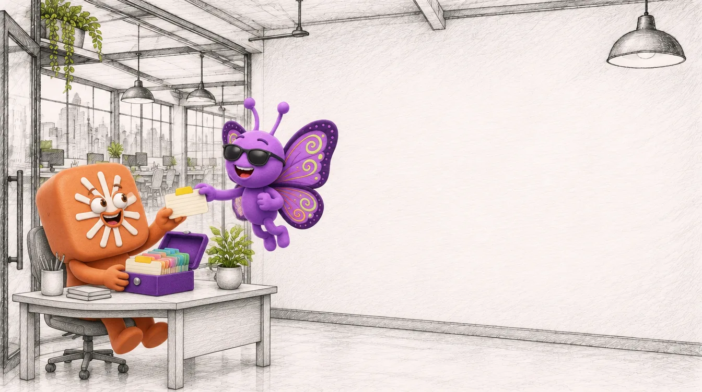
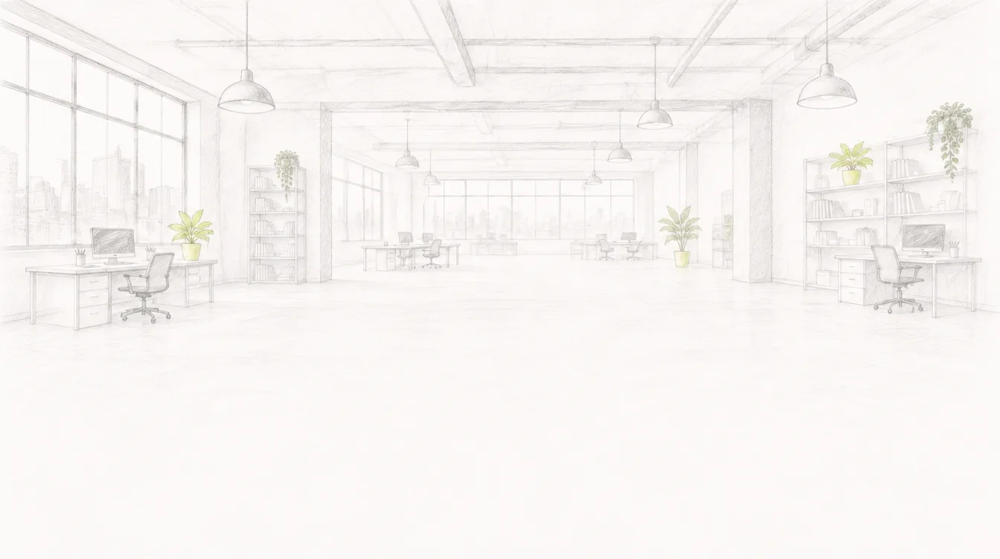

מפגש 2 מתוך 4
Skills
מלמדים את Claude את שיטת העבודה שלכם


מה עושים היום
- מה זה Skill, ואיך Claude טוען אותו
- ממה בנוי Skill
- איפה מוצאים Skills, ואיך בוחרים
- מתקינים ועובדים עם Skill
- התנסות: Skill משיחה, כולל בדיקות
- Skills מומלצים לפיתוח למידה

הגדרה
מה זה Skill?
"folders of instructions, scripts, and resources
that Claude loads dynamically to improve
performance on specialized tasks"
תיקייה עם הוראות, ולפעמים גם קבצים וסקריפטים, ש־Claude פותח רק כשהמשימה מתאימה.
כמו נוהל עבודה שנותנים לעובד חדש: לא קוראים אותו כל בוקר, פותחים אותו כשמגיעה המשימה.
מקור: support.claude.com/en/articles/12512176

התנסות
יוצרים Skill משיחה
לא כותבים מאפס. מתחילים ממשימה שכבר עבדה.
הזמן שלכם
ה־Skill הראשון שלכם
- בוחרים משימה שחוזרת אצלכם כל שבוע
- פותחים שיחה קיימת שעבדה, או עושים אותה עכשיו
- מבקשים מ־Claude להפוך אותה ל־Skill
- מעלים ומדליקים
- בודקים עם שלוש בקשות, ומתקנים

עד הפעם הבאה
משתמשים, ומשפרים
- להשתמש ב־Skill שבניתם על משימה אמיתית
- לרשום מה עבד ומה צריך תיקון
- להביא למפגש הבא תוכן של לומדה קצרה
במפגש 3: Claude כמפיק, לומדה בשיטת vibe coding.

תמיד מוזמנים להתייעץ
ההקלטה, המצגת והקישורים מחכים באזור המשתתפים.